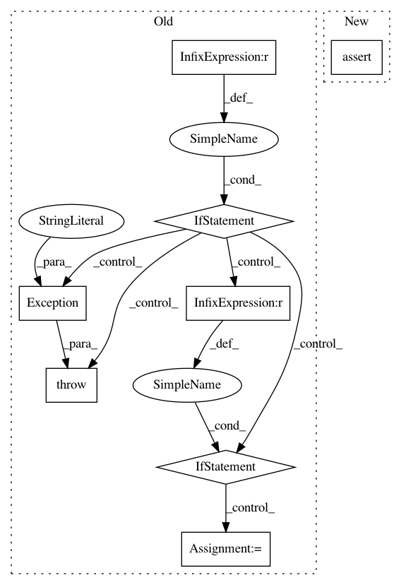

44d558ad7f13251650f40475eef6652df59e4b09,keras/layers/containers.py,Graph,set_previous,#Graph#Any#Any#,254
Before Change
l.reset_states()
def set_previous(self, layer, connection_map={}):
if self.nb_input != layer.nb_output:
raise Exception("Cannot connect layers: "
"input count does not match output count.")
if self.nb_input == 1:
self.inputs[self.input_order[0]].set_previous(layer)
else:
if not connection_map:
raise Exception("Cannot attach multi-input layer: "
"no connection_map provided.")
for k, v in connection_map.items():
if k in self.inputs and v in layer.outputs:
self.inputs[k].set_previous(layer.outputs[v])
else:
raise Exception("Invalid connection map.")
def get_input(self, train=False):
if len(self.inputs) == len(self.outputs) == 1:
return self.inputs[self.input_order[0]].get_input(train)
else:
After Change
weights = weights[nb_param:]
def get_config(self):
return {"name": self.__class__.__name__,
"layers": [layer.get_config() for layer in self.layers]}
def count_params(self):
return sum([layer.count_params() for layer in self.layers])
class Graph(Layer):
"""Implement a NN graph with arbitrary layer connections,
arbitrary number of inputs and arbitrary number of outputs.
This class is also the basis for the `keras.models.Graph` model.
Note: `Graph` can only be used as a layer
(connect, input, get_input, get_output)
when it has exactly one input and one output.
"""
def __init__(self):
In pattern: SUPERPATTERN
Frequency: 3
Non-data size: 8
Instances
Project Name: keras-team/keras
Commit Name: 44d558ad7f13251650f40475eef6652df59e4b09
Time: 2016-02-22
Author: Nicholas.Eggert@target.com
File Name: keras/layers/containers.py
Class Name: Graph
Method Name: set_previous
Project Name: cmu-db/ottertune
Commit Name: 01b4ec3f531e07b8c4a32a13288c963ad8b4b843
Time: 2019-10-14
Author: dvanaken@cs.cmu.edu
File Name: server/website/website/db/myrocks/parser.py
Class Name: MyRocksParser
Method Name: convert_dbms_metrics
Project Name: cmu-db/ottertune
Commit Name: 01b4ec3f531e07b8c4a32a13288c963ad8b4b843
Time: 2019-10-14
Author: dvanaken@cs.cmu.edu
File Name: server/website/website/db/base/parser.py
Class Name: BaseParser
Method Name: convert_dbms_metrics